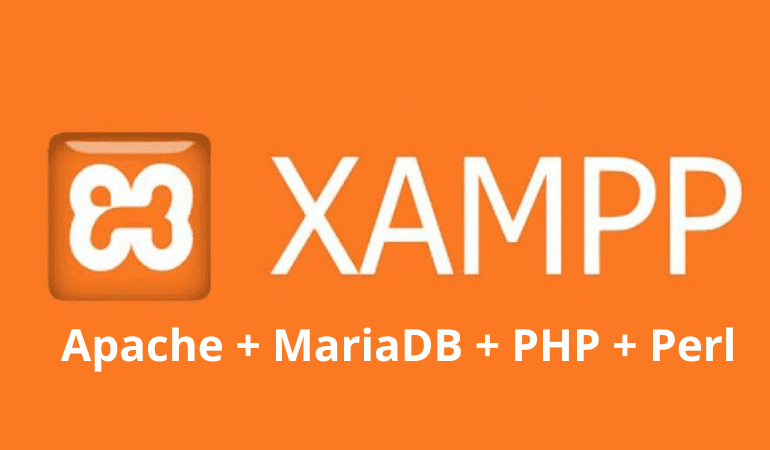
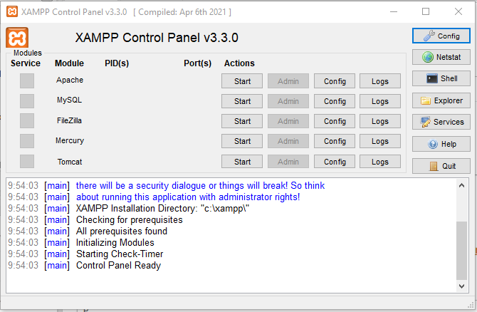
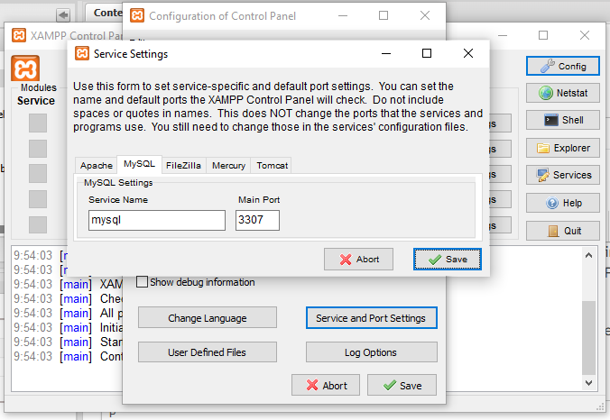
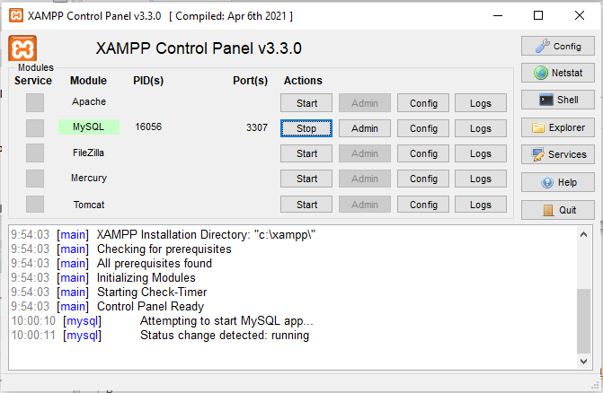
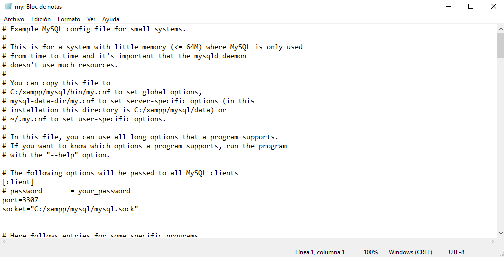
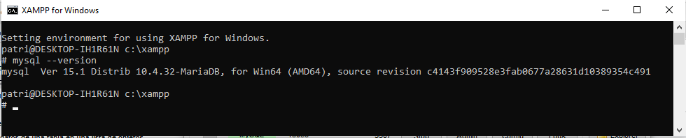
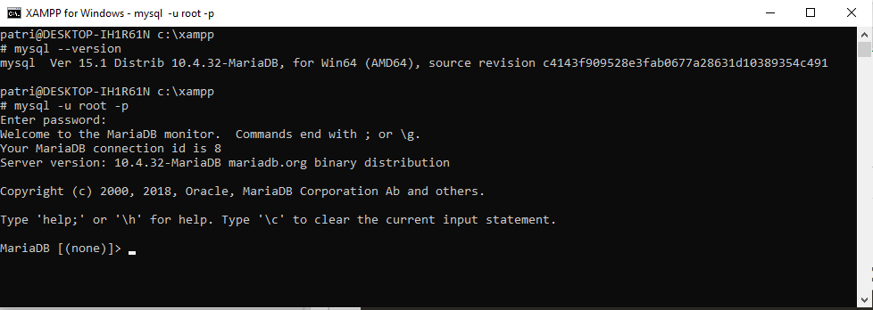
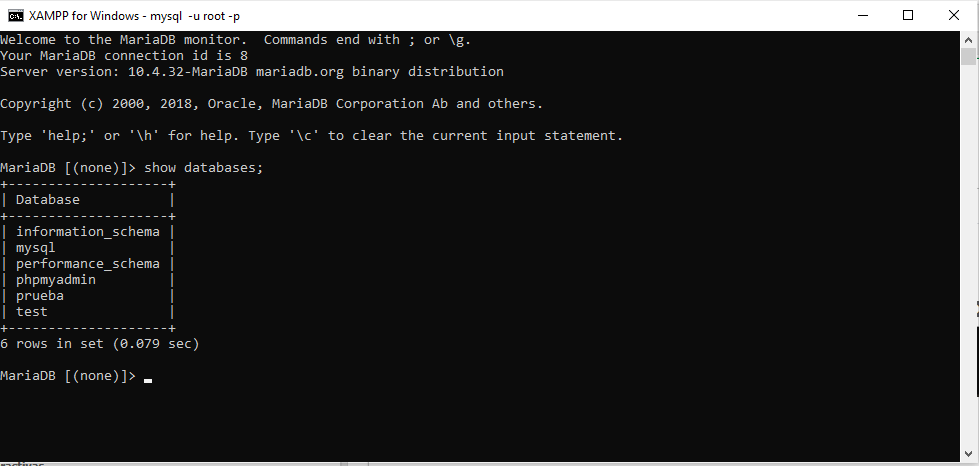
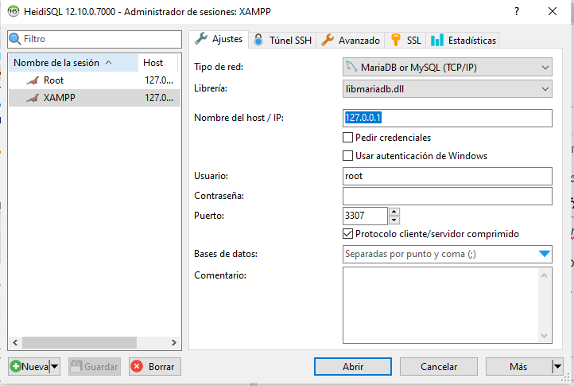
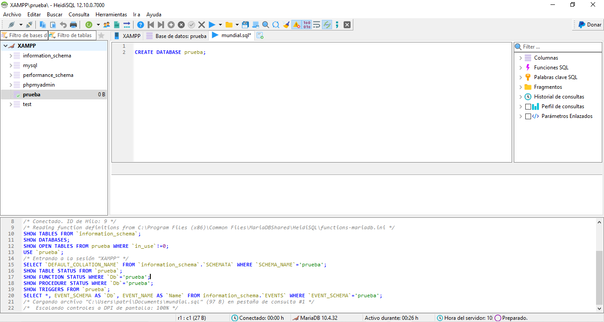

XAMPP es un paquete de software que incluye todo lo necesario para crear un servidor web local en nuestro equipo.

XAMPP incluye:
- Apache → el servidor web.
- MySQL o MariaDB → el SGBD.
- PHP → lenguaje de programación del lado del servidor.
- phpMyAdmin → una aplicación web para gestionar bases de datos fácilmente desde el navegador.
Vale, pero... ¿qué tiene que ver XAMPP?
Haremos uso de esta herramienta para gestionar nuestras bases de datos con MySQL/MariaDB, ya que, además de proporcionarnos este servicio, también tendremos disponible Apache para mejoras futuras en cuanto a servidor para implementar otro tipo de apps web (como las de IA con TensorFlow y JS).
Otra alternativa es instalar directamente el servicio de MariaDB descargándolo desde su sitio web.
Instalación y configuración de XAMPP
Descarga e instala: XAMPP Installers and Downloads for Apache Friends

Una vez dentro, observa que aparecen los servicios y sus respectivos puertos. Por defecto, Apache usa el puerto 80, y MySQL/MariaDB el 3306 (el mismo que usaría el SGBD sin XAMPP). Para evitar problemas por si se decide instalar un servicio de MySQL/MariaDB aislado de XAMPP en el futuro, vamos a modificar el puerto por el 3307.
Para ello, ejecutamos XAMPP como administrador y nos dirigimos a Config --> Serve and Port Settings . En la pestaña de MySQL modificamos el puerto:

Inicia el servicio y comprueba que se conecta al puerto correcto (3307):

Podremos consultar el archivo de configuración principal del servicio my.ini desde el botón Config:

Por último, consultamos a través del Shell la versión instalada de MySQL para comprobar que ya estamos actualizados con MariaDB:

Conexión con el servidor de MariaDB
Antes de irnos a un software externo, probaremos el acceso desde el mismo XAMPP. Se nos habrá creado un usuario root con contraseña vacía.
Desde el mismo Shell, tecleamos el siguiente comando para acceder a MariaDB por consola:
mysql -u root -p
Con el parámetro -u le indicamos el usuario y con el parámetro –p la contraseña. Al no indicarle esta última, MySQL nos pedirá que la introduzcamos, pero como el servidor no tiene contraseña, deberemos pulsar enter directamente.

Una vez dentro, ya podremos consultar tablas y realizar cualquier operación con SQL de las que ya conocemos. Por hacer algo, crearemos una nueva base de datos llamada prueba y consultaremos las BBDD que trae por defecto MariaDB para configuración:
create database prueba;
show databases;
Conexión desde software GUI externo
Una vez comprobado que el servicio funciona, vamos a conectarnos desde algún software externo para hacer más amigable la interacción con nuestra base de datos. Elige el que quieras o el que estés acostumbrado (HeidiSQL, sqlDeveloper, SQLWorkbench, etc.).
Como el nativo de MariaDB es HeidiSQL, para los ejemplos usaremos ese.
Creamos una nueva conexión a nuestro servidor de MariaDB desde HeidiSQL. Por defecto, el nombre del host es siempre localhost (o la ip 127.0.0.1):

Si todo va bien, nos cargará el entorno de nuestra conexión y las bases de datos consultadas anteriormente a través de la consola aparecerán a la izquierda de la pantalla:
